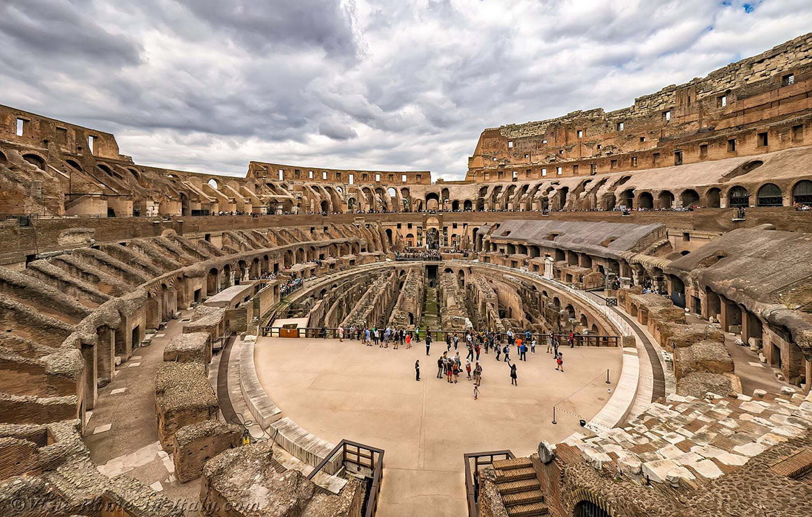

Koloseum
Największy amfiteatr starożytnego świata, symbol potęgi Cesarstwa Rzymskiego.

Historia i znaczenie
Colosseum, znane również jako Flawiuszowy Amfiteatr, zostało wybudowane w 80 roku n.e. przez cesarza Tytusa. Było największym amfiteatrem w Cesarstwie Rzymskim i służyło do walk gladiatorów oraz innych widowisk.
Interesujące fakty:
- Pomieściło do 80,000 widzów
- Za czasów świetności było pokryte marmurem
- Posiadało system zasłon przeciwsłonecznych
- UNESCO wpisało je na listę światowego dziedzictwa w 1980 roku
Informacje techniczne:
| Lokalizacja: | Rzym, Włochy |
| Wysokość: | 48 metrów |
| Pojemność: | 50,000 - 80,000 osób |
| Rok ukończenia: | 80 n.e. |